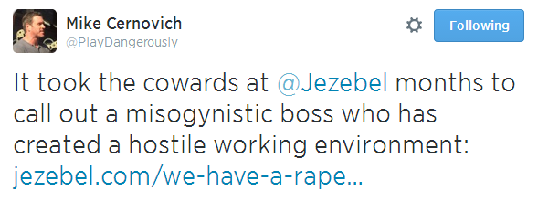

Daryush "Roosh" Valizadeh created ROK in October 2012. You can visit his blog at RooshV.com or follow him on Twitter and Facebook.


Jezebel staff members are so angry at their homosexual boss, Nick Denton, that they have launched an open revolt against him and Gawker management.
The problem started with 4chan’ers who have been recently trolling Jezebel’s comments section with gory and pornographic animated GIFs. The management gave some promises to fix the problem, but months later it remains. This has created an unsafe work environment for Jezebel staff (yes, that’s the angle they are going with). The girls felt that the only way to solve this problem is to band together and revolt against their boss with a public letter. Here are some excerpts:
[Animated gif trolling] is profoundly upsetting to our commenters who have the misfortune of starting their day with some excessively violent images, to casual readers who drop by to skim Jezebel with their morning coffee only to see hard core pornography at the bottom of a post about Michelle Obama, and especially to the staff, who are the only ones capable of removing the comments and are thus, by default, now required to view and interact with violent pornography and gore as part of our jobs.
[…]
We receive multiple distressed emails from readers every time this happens, and have been forwarding them to the architects of Kinja and to higher ups on Gawker’s editorial side for months. Nothing has changed. During the last staff meeting, when the subject was broached, we were told that there were no plans to enable the blocking of IP addresses, no plans to record IP addresses of burner accounts.
[…]
In refusing to address the problem, Gawker’s leadership is prioritizing theoretical anonymous tipsters over a very real and immediate threat to the mental health of Jezebel’s staff and readers.
I’m going to do a solid for the Jezebel staff in announcing the following: Nick Denton doesn’t give a damn about you, your cause, feminism, equality, or the sexism boogeyman. The reason he’s not making any changes to reduce the trolling is because it would also reduce the number of page views that the Gawker empire receives. As you know, page views are critically important for blogs to make money, which is why the internet is swarmed with Buzzfeed, Upworthy, and Gawker clones whose only goal for existence is to get you to click while flushing any notion of an enlightened or rational culture down the drain.
Last month we reported how Jezebel picked a pretty white girl to become editor instead of a more qualified black candidate that was less pleasing on the eyes and less advertiser friendly. How many data points does Jezebel staff and readers need to encounter before understanding that Denton only cares about making enough money so that him and his fiance can live in luxury and travel to exotic locations around the world?
Jezebel is one of the most vehement anti-male sites on the internet. They have been quick to publish mythical notions of patriarchy, street harassment, and “racial micro-aggressions.” Yet who are they hoping will save them from the horrible 4chan trolls and their animated gifs? Men. Read this excerpt from their letter again:
We receive multiple distressed emails from readers every time this happens, and have been forwarding them to the architects of Kinja and to higher ups on Gawker’s editorial side for months. Nothing has changed. During the last staff meeting, when the subject was broached, we were told that there were no plans to enable the blocking of IP addresses, no plans to record IP addresses of burner accounts. Moderation tools are supposedly in development, but change is not coming fast enough.
As a member on RVF pointed out, their saviors are the very same “brogrammers” who they mock. Not even two weeks ago they made a broad attack on men in tech for saying “sexist bullshit.” But when their little dollhouse is attacked, it’s those same men they hope will help them. Men are the horrible enemy until they are needed to fix the clogged toilet.
Mike from Danger & Play points out yet another hypocritical point concerning the Jezebel staff:

For a group of gals who are hyper vigilant about misogyny and sexism, they sure did seem to give their homosexual boss a pass for a long time before they spoke up about something that so affected their ability to work. Did fellow Gawker writer Nitasha Tiku give the same pass for Pax Dickinson when they launched a witch hunt to get him fired from Business Insider? Nope.
Under Denton’s watch, they severely damaged Pax’s career, but it’s okay for Denton to allow posting of pornographic imagery that have so macro-aggressed and triggered his sensitive female staff and readers in the name of making money. Nitasha was quick and ruthless to launch her dubious crusade against Pax, but it took several months of looking at hardcore porn and gore for the Jezebel gals to say something about their own treatment. This tells you how serious they are about their cause when a needed salary is involved to upgrade their Apple laptop and iPhone.
If you’re wondering how Denton will respond to this problem as his flagship feminist site, just ask yourself the following question: what will put more money in his pocket? Only if the entire Jezebel site is threatened with a mass staff or reader exodus will he make any changes that completely stop the animated gif trolling. Until then, he has made it very clear how much he cares about women and the feminist cause. While a few misfits are trolling Jezebel, Nick Denton continues to troll America with web sites that are nothing more than a means to enrich himself and his young homosexual lover. Time will tell if Gawker fans realize the same.
Read Next: Jezebel Writer Lindy West Goes Berserk Because She No Longer Fits In Airplane Seats